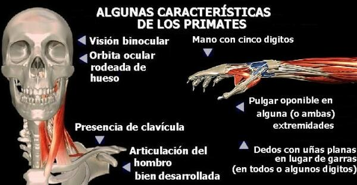

En términos biológicos los humanos somos una especie animal, con importantes atributos como un lenguaje organizado, pensamiento simbólico, conciencia de su propia existencia y un sentido ético. En cuanto a sus orígenes, los humanos somos fruto de los mismos procesos evolutivos que dan cuenta de todas las especies del planeta.
Para conocer el lugar del hombre en la naturaleza, es necesario conocer el sistema de clasificación taxonómica. Los biólogos utilizamos un sistema de clasificación de “grupos dentro de grupos” que nos permite establecer el grado de parentesco entre las especies. La clasificación taxonómica del hombre se muestra en la siguiente tabla:
REINO |
Animal |
FILUM |
Cordados |
SUBFILUM |
Vertebrados |
CLASE |
Mamíferos |
ORDEN |
Primates |
FAMILIA |
Homínidos |
GÉNERO |
Homo |
ESPECIE |
Homo sapiens |
Como se puede apreciar en la tabla 1, la clasificación que se utiliza va de lo general a lo particular. Siendo “el cajón” más grande el de Reino y el más pequeño el de Especie
El hombre se encuentra en el orden de los primates, pero ¿Qué significa ser un primate? Los primates son un grupo de mamíferos placentarios (mamíferos cuyos embriones están retenidos en la placenta y nacen en un avanzado estado de desarrollo), que se caracterizan principalmente por:
-
Visión binocular. Es decir, que los dos ojos se encuentran mirando hacía el frente. Esto facilita la percepción de la profundidad.
 Percepción de los colores (en la gran mayoría de los primates)
El tronco de los primates tiende a estar erguido al estar sentados, al trepar o al caminar.
En el cráneo, las orbitas oculares están rodeadas de hueso.
Los hemisferios cerebrales están bien desarrollados.

Los pulgares están opuestos al resto de los dedos. Esto puede darse al menos en una de las extremidades. Esta característica nos permite agarrar los objetos con las manos, y a muchos primates silvestres les ayuda a moverse entre los árboles. En las manos primates, la capacidad de oponer el pulgar, se debe a una articulación que debido a su forma recibe el nombre de “articulación silla de montar”.
Presencia de uñas planas en lugar de garras en las manos y pies. En algunas especies (como los titíes) las uñas están modificadas en algunos de los dedos.
Presencia de clavícula. En muchos mamíferos no-primates este hueso se encuentra ausente o muy reducido.

La articulación del hombro se encuentra bien desarrollada. Esto permite el movimiento del brazo en todas las direcciones. Como ejemplo de esta capacidad presente en los primates, trate de mover la extremidad anterior de su perro en todas las direcciones, y notará como esto se hace imposible.

La articulación del codo permite la rotación del antebrazo. Los movimientos de rotación del antebrazo se conocen como pronación y supinación. Observe la gráfica.
2. ¿Por qué los organismos tienen características similares, que permiten clasificarlos jerárquicamente?
Charles Darwin en su obra “El Origen de las Especies” atinó a la respuesta: “Desde el periodo más remoto de la historia del mundo se ha visto que los seres orgánicos se parecen entre sí, en grados descendentes, de modo que pueden ser clasificados en grupos subordinados a grupos. Esta clasificación no es arbitraria, como la agrupación de estrellas en constelaciones. Creo que así es, y que la comunidad de descendencia –única causa conocida de estrecha semejanza en los seres orgánicos- es el vínculo que, aunque atisbado en diferentes grados de modificación, nos es revelado en parte por nuestras clasificaciones” (Capítulo XIV. Énfasis añadido)
Bajo esta perspectiva, podemos afirmar que los primates tenemos las características mencionadas anteriormente, porque compartimos un ancestro común del cual las heredamos.
Los humanos en el grupo de los primates - Índice
Volver a la sección Ciencias de los orígenes
Comentarios
Comments powered by Disqus